Unul dintre cele mai satisfăcătoare sentimente pe care îl am este mândria de a ști ce-mi place și, mai important poate, ce îmi displace. Cred că această dorință de a fi fidelă sie însăși oferă unei femei oportunitatea de a fi chic - o etichetă mult râvnită, ba chiar complimentul suprem din zilele noastre.
Mi-am propus, astfel, să scriu pe scurt 10 chestii care mă obsedează (în sensul bun al cuvântului) și pe care le consider extrem de chic.
1. A fi consistent și a repurta piesele din garderobăIdeea tinerelor generații de a purta o ținută o singură dată mi se pare, pe cât de dificil de implementat, pe atât de neglijentă față de planetă și, nu în ultimul rând, de prost gust. Ce poate sugera altceva decât o imensă lipsă de creativitate noutatea continuă a unei haine? De ce ne-am sinchisi atât de mult pentru un veșmânt purtat la o singură ocazie? Cu siguranță nu ar mai fi o prioritate nici calitatea, nici gândul din spatele creației, nici dorința de a ne exprima personalitatea.
2. Ochelarii de soare
De mult timp, ochelarii de soare au devenit un accesoriu purtat
pentru a completa o ținută și nu ca o necesitate absolută. Puterea
lor de a transforma o rochie banală de seară sau de a face o jachetă
de piele mai cool este de apreciat.
 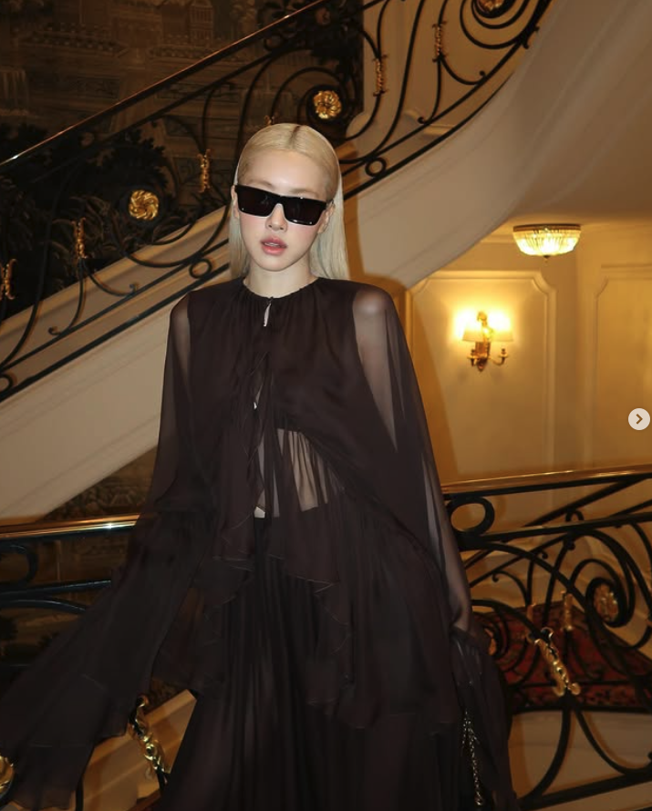
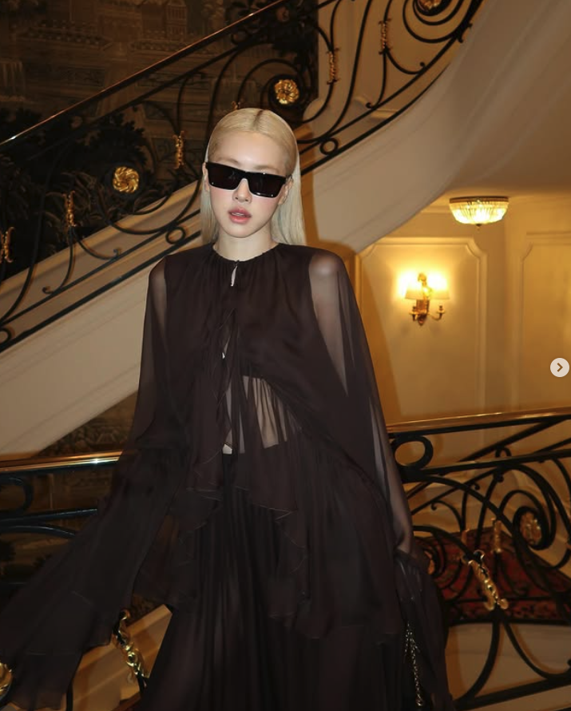
Deși sunt fană a curățeniei și minimalismului, livingurile bej copy-paste de pe Pinterest sunt, cel mult, plictisitoare. Sentimentul căutat este momentul când intri în casă și te poți gândi: „this feels like him/her”.
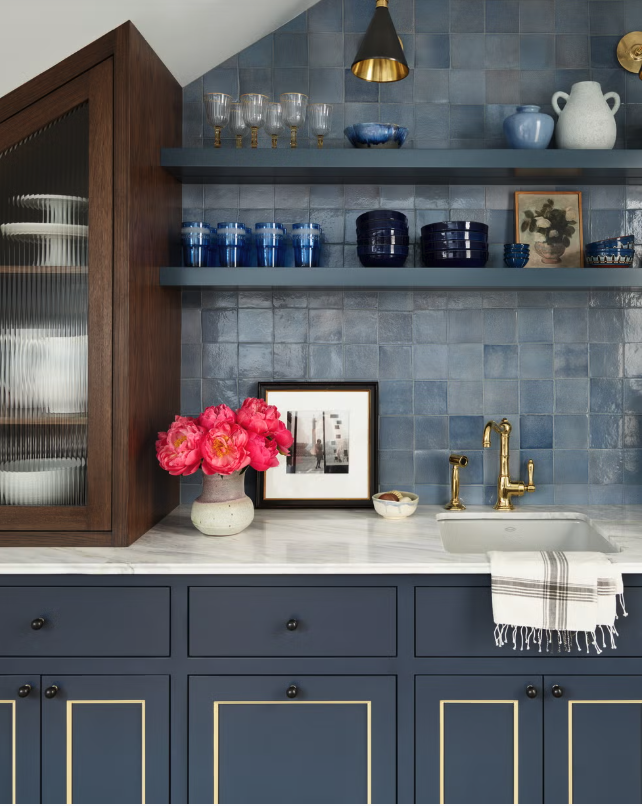 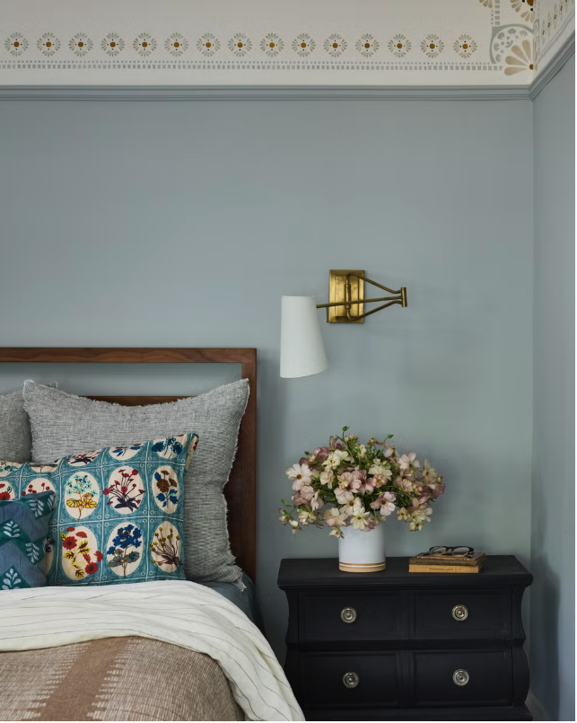
4. O pereche bună de jeansDestul de banal, dar o pereche de jeans perfectă te poate salva în multe situații, fiind chic atât într-o ținută casual, cât și combinată cu mules și o cămașă clasică albă. Totul stă în accesorii!


Proaspăt pomenită, o bijuterie extravagantă și unică, transmisă poate din generație în generație, conturează un stil aparte, mai greu de găsit.
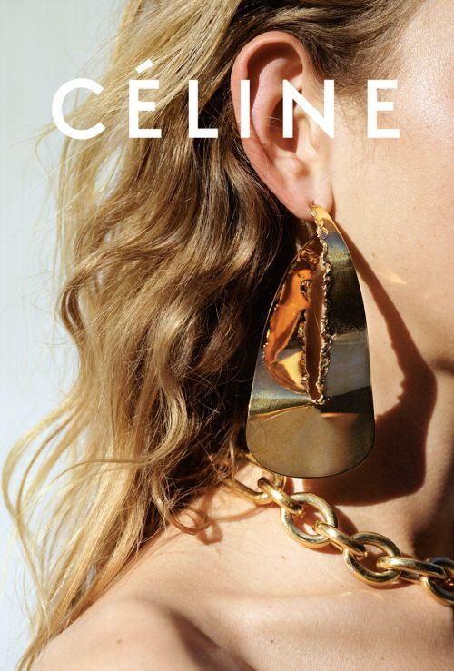 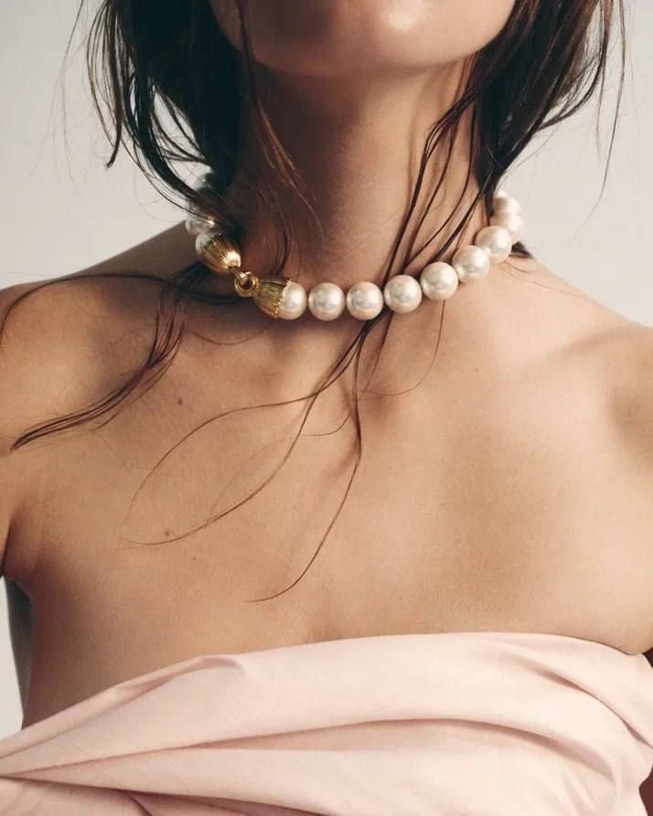
6. Tunsoarea potrivităAm trecut de epoca în care totul se rezuma la haine, mai ales când privirea se concentra, în primul rând, pe înfățișare și, implicit, pe tunsoare. De la un bob lungit la bucle lejere, o tunsoare bine aleasă scoate în evidență liniile feței și trăsăturile mai aparte.
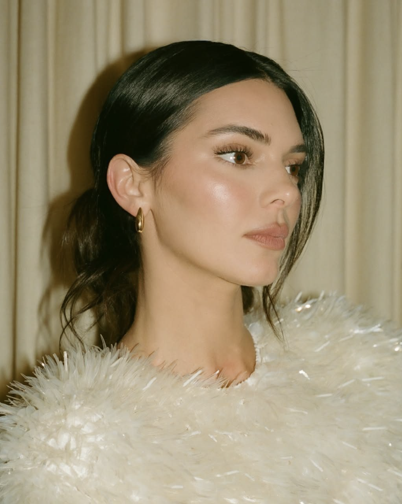 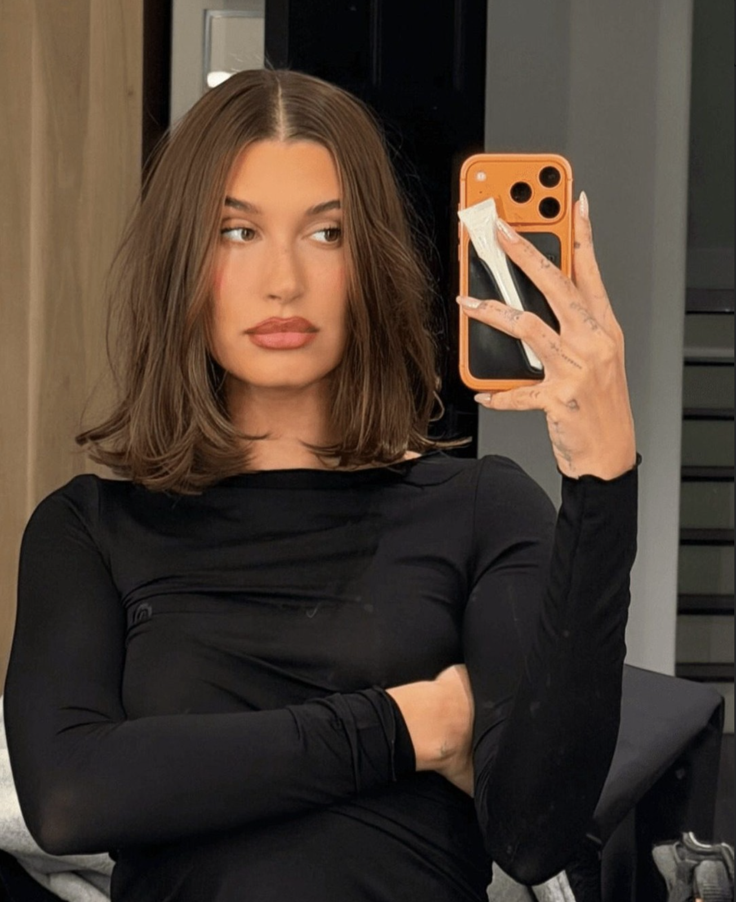
7. A avea un catch allUn catch all este un obiect funcțional de decor situat de obicei lângă intrarea în casă, pe noptieră sau în hol care servește la depozitarea temporară a unor obiecte mici,utilizate frecvent: chei, monede, ochelari, bijuterii etc. Recomand cele din ceramică!
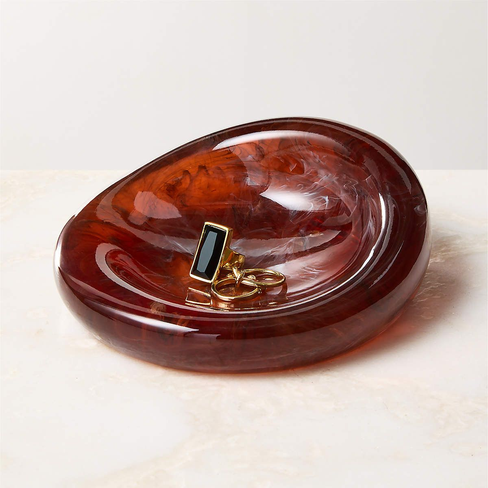 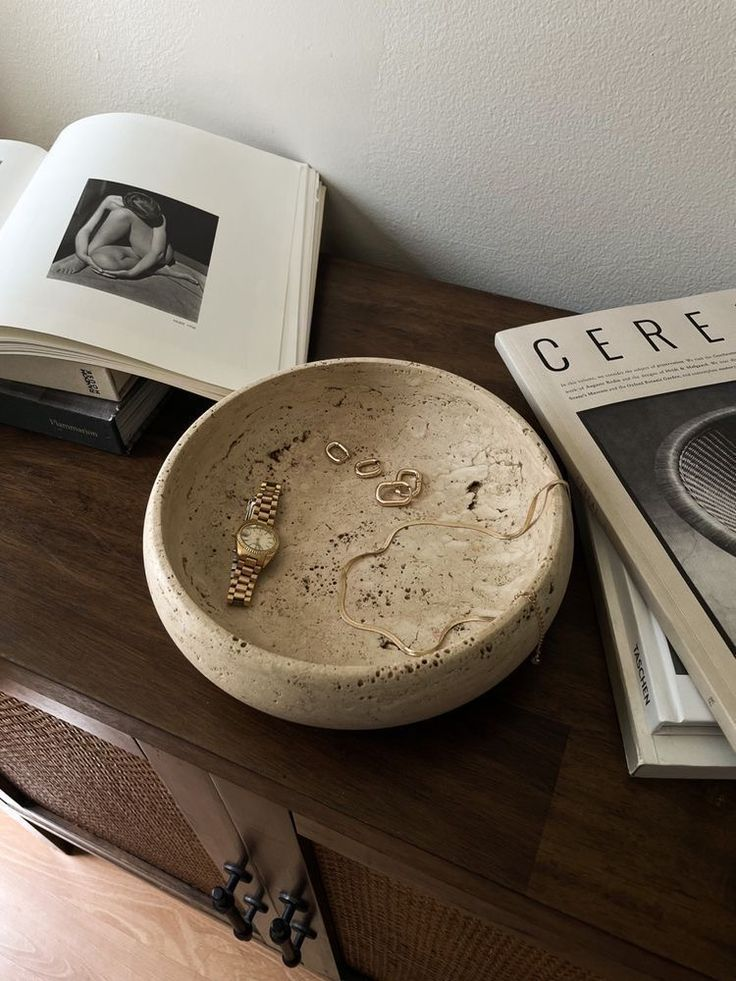
8. Parfum tip semnăturăSenzațiile olfactive fac impresie, indiferent dacă ne dorim sau nu. Un parfum misterios, doar al tău, este extrem de chic: te poate scoate din anonimat, devenind celebru, așa cum este cazul Rihannei. Oamenii sunt fascinați de oportunitatea de a o „mirosi” pe Rihanna. Se speculează că își poartă propria creație: Fenty Eau de Parfum.
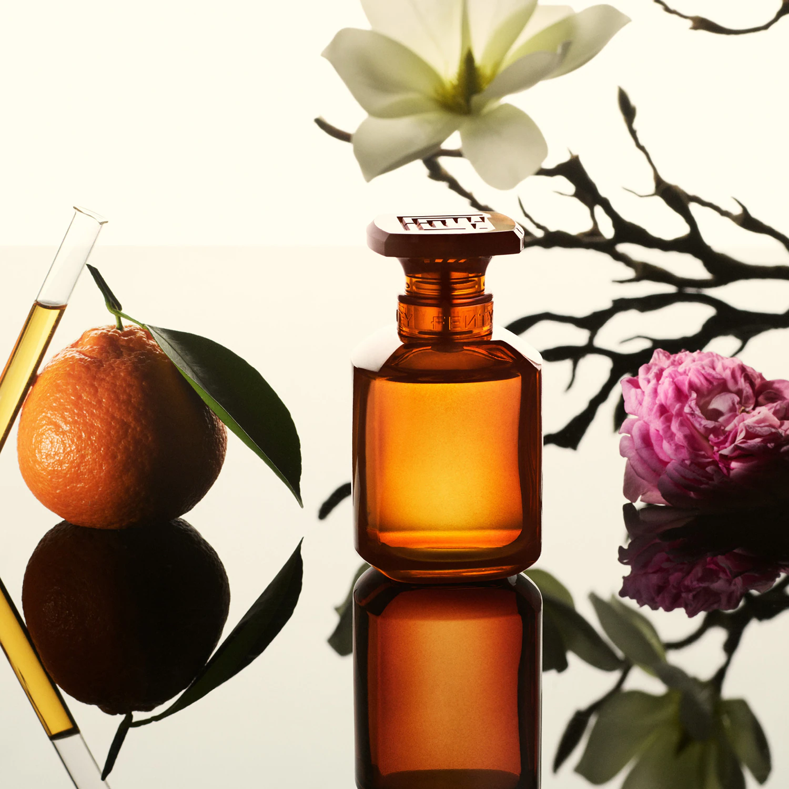 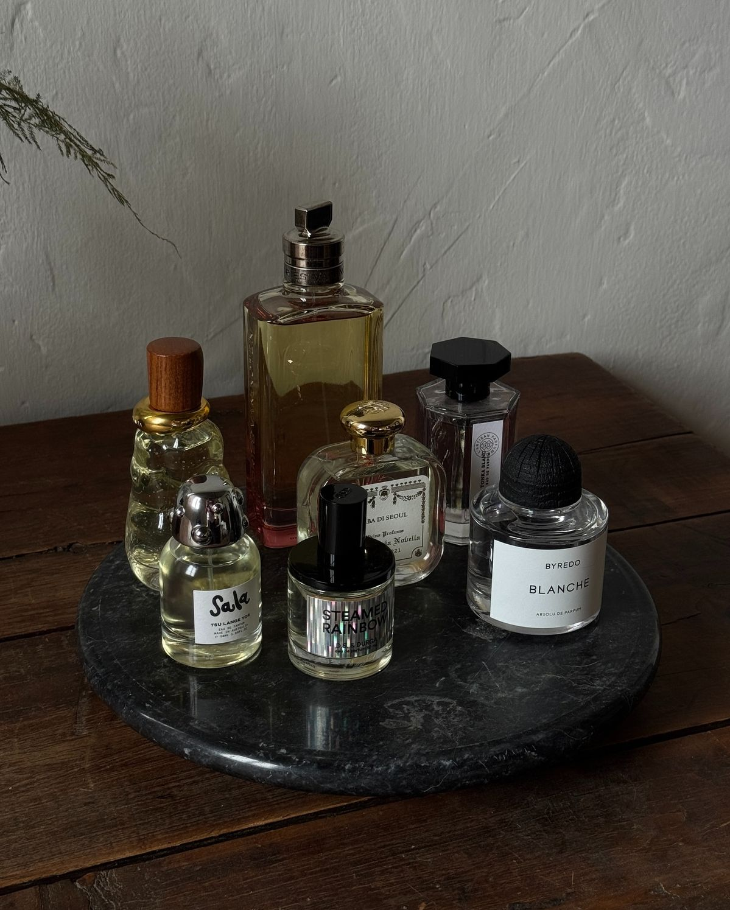
9. Red LipPuterea unor buze roșii este cunoscută și utilizată constant de către franțuzoaice, fiind foarte ușor de însușit. Secretul constă într-un machiaj natural, fără accent pe ochi, și în găsirea nuanței de roșu potrivite. Al meu este Kiko Milano Jelly Stylo 509.
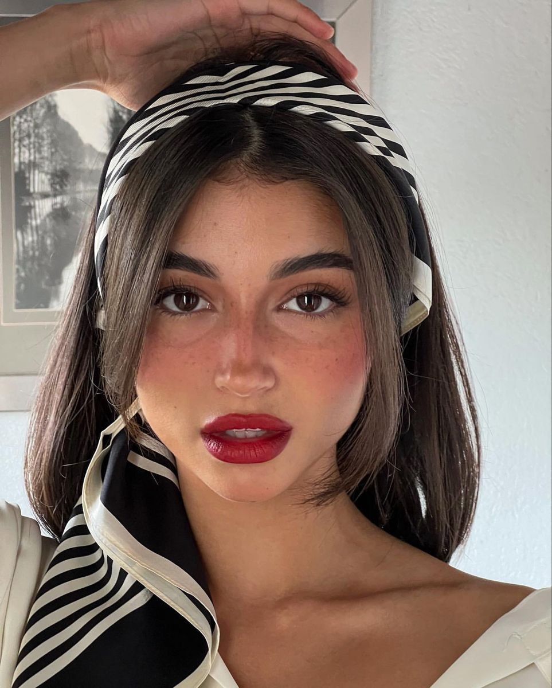 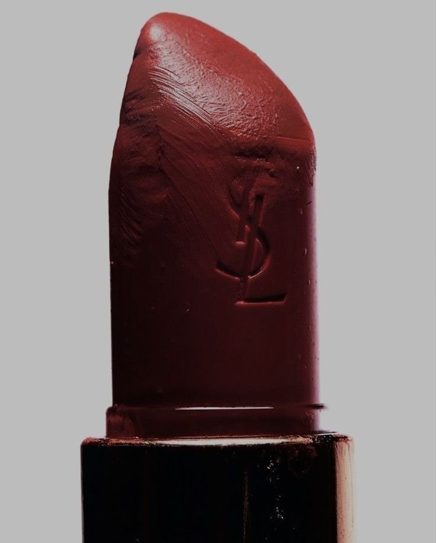
10. A îmbătrâniEste, poate, boala supremă a femeilor aceea de a căuta nestăvilit perfecțiunea și tinerețea. Or, firele albe și ridurile din jurul gurii spun o poveste. Deși botoxul și fillerele pot ajuta la eliminarea unui disconfort sau a unui neajuns, ar trebui să îmbătrânim cu mândrie, asemenea fiecărui zâmbet ascuns în spatele unui rid.
-AE